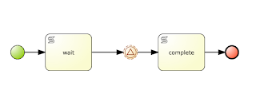
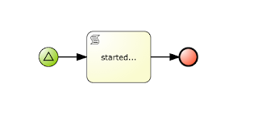
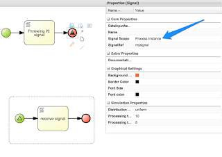
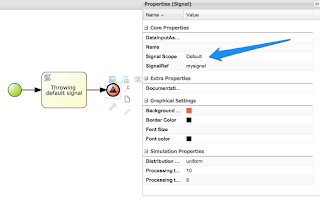
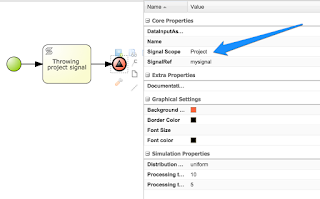
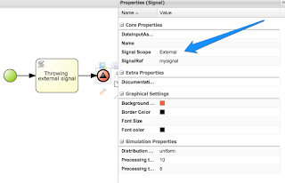
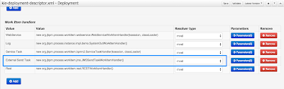
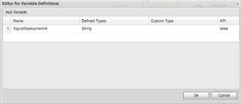

Improved signaling in jBPM 6.3
- throw events
- intermediate event
- end event
- catch events
- start event
- intermediate event
- boundary event
- introduction of signal scopes for throwing events
- support for parameterized signal names – both throw and catch signal events
Signal scopes
- process instance scope – is the lowest in the hierarchy of scopes that narrows down the signal to given process instance. That means only catch events within same process instance will be singled, nothing outside of process instance will be affected
- default (ksession) scope – same as in previous versions (and thus called default) that signals only elements known to ksession – behavior will vary depending on what strategy is used
- singleton – will signal all instances available for this ksession
- per request – will signal only currently processed process instance and those with start signal events
- per process instance – same as per request – will signal only currently processed process instance and those with start signal events
- project scope – will signal all active process instances of given deployment and start signal events (regardless of the strategy)
- external scope – allows to signal both project scope way and cross deployments – for cross deployments it requires to have a process variable called ‘SignalDeploymentId‘ that provides information about what deployment/project should be the target of the signal. It was done on purpose to provide deployment id as doing overall broadcast would have negative impact on performance in bigger environments
- starting up with those that will receive signals – here there is no difference
 |
| Intermediate catch signal event |
 |
| Start signal event |
- next those that will throw events with different scopes
 |
| Process instance scoped signal |
 |
| Default (ksession) scoped signal |
 |
| Project scoped signal |
 |
| External scoped signal |
Process instance, default and project does not require any additional configuration to work properly, though external does. This is because external signal uses work item handler as a backend to allow pluggable execution (out of the box jBPM comes with one that is based on JMS). It does support both queue and topic although it is configured with queue in jbpm console/kie workbench.
So to be able to use external signal one must register work item handler that can deal with the external signals. One that comes with jBPM can be easily registered via deployment descriptor (either on server level or project level)
 |
| Registered External Send Task work item handler for external scope signals |
Some might ask why it is not registered there by default – and the reason is that jBPM supports multiple application servers and all of them deal with JMS differently – mainly they will have different JNDI names for queues and connection factories.
JMS based work item handler supports that configuration but requires to specify these JNDI look up names when registering handler.
As illustrated on above screenshot, when running on JBoss AS/EAP/Wildfly you can simply register it via mvel resolver with default (no arg) constructor and it will pick up the preconfigured queue (queue/KIE.SIGNAL) and connection factory (java:/JmsXA). For other cases you need to specify JNDI names as constructor arguments:
new org.jbpm.process.workitem.jms.
JMSSendTaskWorkItemHandler(“jms/CF”, “jms/Queue”)
Since external signal support cross project signals it does even further than just broadcast. It allows to give what project needs to be signaled and even what process instance within that project. That is all controlled by process variables of the process that is going to throw a signal. Following are supported:
- SignalProcessInstanceId – target process instance id
- SignalDeploymentId – target deployment (project)
Both are optional and if not given engine will consider same deployment/project as the process that throws the signal, and broadcast in case of missing process instance id. When needed it does allow fine grained control even in cross project signaling.
 |
| declared SignalDeploymentId process variable for external scope signal |
You can already give it a try yourself by cloning this repo and working with these two projects:
- single-project – contains all process definitions that working with same project
- external-project – contains process definition that uses external scope signal (includes a form to enter target deployment id)
- When using process that signals only with process instance scope (process id: single-project.throw-pi-signal) it will only signal event based subprocess included in the same process definition nothing else
- When using process that signals with default scope (process id: single-project.throw-default-signal) it will start a process (process id: single-project.start-with-signal) as it has signal start event (regardless of what strategy is used) but will not trigger process that waits in intermediate catch event for other strategies than singleton
- When using process that signals with project scope (process id: single-project.throw-project-signal) it will start a process (process id: single-project.start-with-signal) as it has signal start event and will trigger process that waits in intermediate catch event (regardless of what strategy is used)
- When using process that signals with external scope (process id: external-project.throw-external-signal) it will start a process (process id: single-project.start-with-signal) as it has signal start event and will trigger process that waits in intermediate catch event (regardless of what strategy is used) assuming the SignalDeploymentId was set to org.jbpm.test:single-project:1.0.0-SNAPSHOT on start of the process

{kind=link}
{kind=link}
{kind=link}
{kind=link}
{kind=link}
{kind=link}
{kind=link}
{kind=link}